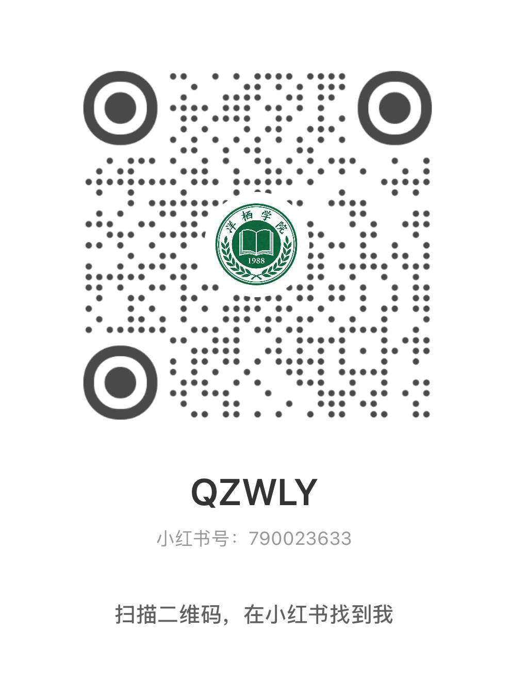
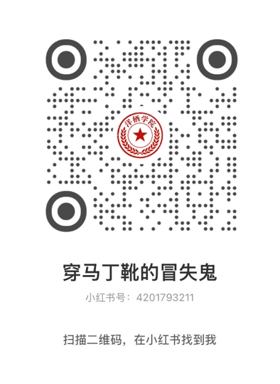

我在网吧里待了整整一夜。县城那家网吧在地下室，空气不流通，键盘上全是烟灰和方便面调料的味道，屏幕的蓝光把每个人的脸照得像死人。我注册了一个博客，坐在最角落的位置上，把耳机挂在脖子上，一个字一个字地敲。
我没有写很多。不敢写多，也怕写错。我只写了三件事。第一，洋栖中学校内花圃里种的不是虞美人，是罂粟，我亲手摘过，茎上有毛，叶子是羽状深裂，蒴果椭圆形，顶端有盘状结构，折断后流出白色汁液。第二，学校给部分学生发放一种“vitamin营养药”，服用后学生出现注意力涣散、记忆力下降、身体消瘦、手抖等症状，我怀疑里面含有成瘾性物质。第三，学校以“特招”为名选拔学生，被选中的学生去向不明，上学期还在的几个高年级学生这学期全部消失，校方称是转学，但没有任何转学记录可查。
我把这篇博客发了出去。发完之后我盯着屏幕看了很久，屏幕上那几行字安安静静地躺在那里，白色的背景，黑色的字，像一份没有人会看的告示。我把页面刷新了一遍，还是没有人评论，没有人转发，浏览量是零。我又刷新了一遍，还是零。我靠在椅背上，后脑勺抵着墙上的一块湿渍，凉意从头发丝渗进来，沿着脊椎一路往下。
我知道这篇东西可能没有人会看到。这个博客藏在互联网的某个角落里，像一粒灰尘落在一片更大的灰尘上面。但我还是要写。如果不写，我就什么都没有做。如果什么都没有做，那焦思雨就会继续吃那些药，继续瘦下去，继续在课堂上发呆，手继续抖，眼睛继续散，然后有一天她的名字也会从花名册上消失，刘芳会说她转学了，去了更好的学校，没有人追问，没有人怀疑，就像那些高年级的学生一样，像从来没有存在过一样。
我每隔几天就去一次网吧，更新博客。我写得更详细了，把花圃的位置写了出来，就在操场东侧的铁丝网后面，紧挨着实验楼。我写了那些花的花期，从二月开到五月，李建国亲自打理，不让任何学生采摘。我写了那个瓶子的样子，写了标签上的字，写了药的颜色和气味。我写了焦思雨的症状——我没有写她的名字，我只写了“某位服用该药的学生”。我写了她以前的样子和现在的样子，写了她的成绩从八十六分掉到十五分，写了她的手抖得握不住笔。
浏览量开始涨了。从零变成十，从十变成一百，从一百变成五百。有人在评论里问我是不是在造谣，有人说已经把这个博客举报给了网警，也有人说自己也是洋栖中学的学生，说我说的是真的，他亲眼见过那些花。还有人说在别的学校也见过类似的情况，不止洋栖中学一家。我每一条评论都看，看到凌晨，眼睛酸得流眼泪，屏幕上的字糊成一片一片的，像被水泡过的报纸。
五月下旬的一个晚上，我从网吧出来，走在回学校的路上，河沟边上的路灯坏了一半，剩下的几盏发出昏黄的光，在地上照出一小圈一小圈的亮斑，像一个个孤岛。我走在黑暗里，脚步声在空旷的路上回响，哒，哒，哒，像有人在后面跟着我。我停下来，声音也停了。我回头看，没有人，只有风把地上的塑料袋吹起来，在路灯下面转了一圈，又落下去。
我开始注意身后有没有人跟着我。上下学的路上，食堂打饭的队伍里，操场上做课间操的时候。有时候我觉得有人在看我，转过头去，什么都没有，只有一群低着头走路的学生，或者一棵歪歪扭扭的梧桐树。但那种被注视的感觉很真实，像一根细细的针尖抵在后颈上，不刺进去，就那么抵着，让你时时刻刻都知道它在那里。
六月的第一个周末，我做了一件事。我把那张卡从书包最里面的夹层里翻了出来。那张银行卡，妈妈留下的那张，每个月往里打二百五十块钱的那张。我把卡拿在手里翻来覆去地看，卡片已经旧了，边角磨白了，磁条上有一道浅浅的划痕，是跟钥匙搁在一起磨的。我不知道里面还剩多少钱，大概有几千块，我没怎么花过，除了买彩色铅笔、买发圈、买鸡蛋和饭盒里多出来的那些菜。
我把卡揣进口袋里，去了县城邮政局。柜台后面坐着一个中年女人，头发烫成方便面一样的卷，指甲涂了红色的指甲油，敲键盘的时候指甲磕在键帽上，嗒嗒嗒地响。我说我要办一张手机卡，她抬眼看我一下，问我有没有身份证。我说有，把身份证递过去。她看了看身份证，又看了看我，大概是觉得我这个年纪不该自己来办手机卡，但她没有问，把身份证还给我，收了我五十块钱，递给我一张SIM卡，小小的，透明塑料壳里包着一片芯片，像一颗被剖开的种子。
我拿着那张SIM卡站在邮政局门口，太阳晒得我头皮发麻。六月的湘水已经热了，空气里的灰味更重了，水泥厂的烟囱冒着白烟，跟天上的云搅在一起，分不清哪边是烟哪边是云。我把SIM卡装进一个信封里，又在信封里塞了一张纸条，纸条上写着几行字。
“银行卡密码是你生日。900101。我记过的，你告诉过我你的生日是一月一号。卡里有钱，不多，够你用一阵子。手机卡我已经办好了，号码在纸条背面，你去买个手机插上就能用。不要用学校的座机打电话，不要跟任何人提起我。”
我把信封装好，封口舔了一下，咸的，大概是手上出汗蹭到嘴唇上了。我在信封正面写了焦思雨的名字，字迹潦草，但能认出来。
我不知道我为什么要做这些事。我只是有一种感觉，一种说不清楚的感觉，像暴风雨来之前空气里那种闷，没有风，没有雨，但你知道它要来了，你知道云层在头顶上越积越厚，你知道闪电迟早会劈下来，但你不知道它会劈在哪里。我站在邮政局门口，看着街上的人来人往，卖菜的、骑车的、遛弯的，每个人都低着头走自己的路，没有人抬头看天。我也低着头走回了学校。
那天晚上我把信封塞进了焦思雨的书包里，塞在最里面的夹层里。
焦思雨在洗漱，不在宿舍。她的床铺收拾得很整齐，枕头边上放着那个孔雀蓝的发圈，丝绒已经起毛了，颜色也没有以前那么亮了，但她每天晚上都把它放在枕边，早上再套在手腕上。我站在她的床铺前面，看着她叠得方方正正的被子，看着她摆在床头的一摞课本，看着她那双洗得发白的帆布鞋整齐地放在床下，鞋尖朝外，随时准备穿上就走。她什么都准备好了，但她不知道要往哪里走。
我不知道我是从什么时候开始知道我会死的。也许是那天在花圃边上摘花的时候，也许是那天在网吧里敲下第一个字的时候，也许是更早，早到我第一次觉得这个学校不对的时候。我不是不怕死，我只是觉得有些事情比死更重要。我妈走的时候没有回头，我爸回来的时候不会看我，这个世界上从来没有人觉得刘岚这个人值什么钱。但焦思雨觉得。她什么都没有说过，但她的目光，她坐在我家地板上画画时嘴角翘起来的样子，她把手放在我掌心里时那冰凉的指尖，她说“你别再用那种东西了”时平淡的语气——这些就是答案。这个世界上有一个人，她觉得我值得她多看我一眼。那我也得让她觉得，她值得我做一些事情。
六月七日，凌晨。天还没亮，我收到一条短信，号码是陌生的，内容只有五个字：“临天崖，十点十五。”我没有问是谁，也没有问为什么。我知道。
我起床的时候天刚蒙蒙亮，窗外有鸟叫，叫得很急，像在催什么。我穿好衬衫，把头发扎成马尾，对着洗手池上面那块裂了一条缝的镜子看了自己一眼。镜子里的我脸色发灰，眼圈发青，颧骨比几个月前高了不少，瘦了。我冲着镜子里的自己扯了一下嘴角，那个笑容很难看，像在哭。我不笑了，转身出了门。
我在校门口等了一会儿，等了大概二十分钟，焦思雨从宿舍楼里出来了。她走得很慢，步子很小，低着头看地面，像在找什么东西。我叫了她一声，她抬起头，看见我，眼睛里有一瞬间的光，像快灭的灯被风拂了一下，又亮了一瞬。
“这么早？”她问。
“嗯，跟你说个事。”
“什么事？”
我从口袋里掏出那张银行卡，递给她。她低头看了看，没有接。
“这是？”
“我妈留的卡。密码是你生日，900101。”
她的眼睛猛地抬起来，看着我，瞳孔缩了一下，像被什么东西扎到了。“你什么意思？”她的声音变了，不再是那种慢吞吞的、飘忽的语调，而是忽然变紧了，像一根被拧到极限的绳子，随时会断。
“没什么意思。你拿着。用得上。”
“刘岚，你在说什么？”
“我没说什么。你听我说完。”我把卡塞进她手心里，把她的手指合上，让她的拳头攥住那张卡。她的手很凉，指节僵硬，攥着卡的时候骨节泛白，像攥着一块冰。“手机卡在你书包里，信封里，我昨天放的。你去买个手机，不要用学校的电话，不要跟任何人说我的事。”
“你要去哪里？”她的声音开始发抖了，整个人都在发抖，从肩膀到手，从手到嘴唇，像一根被风吹得快要折断的树枝。
“我去办点事。你记住，如果有一天有人问你认不认识我，你就说不认识。我们不是很熟，就是同桌，说过几句话，仅此而已。你什么都不知道，什么都没看见，什么都没听见。你还要考大学，你要考出去，去一个有山有水的大城市，真正的山，真正的水，不是这种灰扑扑的东西。”
“刘岚——”
“你听我说完。”我的声音比我预想的要大，大得在空荡荡的操场上回荡了一下，撞在对面教学楼的墙上，弹回来，变成一声模糊的回音。我深吸了一口气，把声音压下来。“你以后不要吃那个药了。扔掉，倒进马桶里冲掉，不要让别人看见。花圃里的花你不要靠近，任何人让你去你都不要去。如果有人问你关于我的事情，你就说你什么都不知道。”
她的眼眶红了，但没有哭。她站在我面前，嘴唇紧紧地抿着，下巴在抖，但她没有让眼泪掉下来。她就是这么一个人，什么都忍着，疼忍着，怕忍着，连哭都忍着。
“你什么时候回来？”她问。
我没有回答。
我看着她，想把她的样子刻进脑子里。她的短发，她的眼睛，她右脸上那片已经淡了很多的浅红色印记，她手腕上那个起毛的孔雀蓝发圈，她瘦削的肩膀，她洗得发白的校服，她那双总是干干净净的帆布鞋。她整个人都干干净净的，像一口没有被污染过的井，清澈得能看见底下的每一颗石子。我想跟她说很多话，想说对不起，那场火是我害的，你的脸是我毁的。想说你是我这辈子见过的对我最好的人。想说如果我能活着回来，我带你去那个有山有水的大城市，我租一个房子，我们在里面画画，画到半夜，画到彩色铅笔都用秃了，画到满屋子都是纸，连下脚的地方都没有。
但我什么都没有说。我只是转过身，走了。
我走了大概十几步，听见她在后面叫我。声音很小，很轻，像那天在教室里第一次跟我打招呼时一样，轻轻的，像怕吵醒谁似的。
“刘岚。”
我没有回头。我怕我回头就走不了了。
临天崖在云川县的西边，崖壁很陡，面朝着一条公路，公路底下是一条河，河水浑黄，带着上游冲下来的泥沙。崖顶有一个观景台，铁栏杆锈迹斑斑，上面挂着几条褪色的许愿带，风一吹就飘起来，像招魂的幡。我到的时候是十点，早了十五分钟。观景台上没有人，风很大，从崖口灌进来，吹得我的校服鼓起来，像一张帆。
我站在栏杆边上往下看。崖底很远，公路像一条灰白色的带子，河像一条黄色的线，汽车小得像蚂蚁，慢慢地爬。风从下面往上吹，带着河水的腥味和柴油的臭味，灌进我的鼻子里，呛得我咳嗽了两声。
我想起了很多事情。想起八岁那年妈妈站在门口回头看我，手里攥着一个橘子，橘子皮被我抠得坑坑洼洼。想起爸爸把学费塞给我时看都没看我一眼，转身就走了，背影消失在水泥厂的灰雾里。想起网吧里蓝幽幽的屏幕，想起那些老电影里的人物，阿甘坐在长椅上说人生像一盒巧克力，我到现在也不知道巧克力是什么味道。想起第一次在教室里看见焦思雨，她抬起头看我，眼睛很干净，像山里的井水。想起她在黑暗里发抖的手，冰凉的指尖，被我握住时微微的颤抖。想起她在地板上画画，画了一个笑得咧到耳根的太阳。想起她说“挺好的”时的语气，很认真，不是客气，是真的觉得好。
算了。
背后传来脚步声。不止一个人，是三个人，或者四个。皮鞋踩在石板地上，咔，咔，咔，节奏很稳，不急不慢，像散步。我没有回头。风更大了，把我的马尾吹起来，头发打在脸上，有点疼。
“刘岚。”
我转过头。他们站在观景台的入口处，四个人，李建国走在最前面，后面跟着三个男人，穿着深色的夹克，面无表情。
“你写了不该写的东西。”他说。
我没有说话。
“你把那些东西删掉，我们可以当什么都没发生过。”
“我没有东西可以删。”我说。
他看了我一眼，叹了口气，像老师对一个屡教不改的学生感到失望时那样叹了口气。那个叹气的声音在风里飘了一下就散了。“那没办法了，”他说，声音还是很平静，像在课堂上讲一道二次函数的题，讲完了，学生听不懂，他说“那没办法了”，然后翻到下一页。
他朝我走了一步。我退了一步，后背抵上了栏杆。铁栏杆硌着我的脊椎，冰凉冰凉的，透过校服的布料传进来，冷得我一个激灵。风从崖底往上吹，吹得栏杆嗡嗡响，像一根被拨动的琴弦。
我往下看了一眼。很高。很高很高。
我的手在发抖，不是冷的，是怕的。我怕高。我一直怕高，从来没有跟任何人说过。焦思雨也不知道。我怕高，怕站在高的地方往下看的时候，身体里会有一个声音说，跳下去。那个声音不是想死，是想飞。但我不会飞。我只是一个从水泥厂宿舍楼里走出来的女孩，成绩中下游，性格偏激，目无尊长，不服管教。我画了一年的火柴人，画了一棵比人大三倍的树，画了一条在心里没有干掉的河。我写了一篇没有人会看的博客，办了一张手机卡，留了一张银行卡。我能做的事情都做了。
他们又走近了一步。
我翻过了栏杆。铁锈蹭了我一手，掌心火辣辣地疼。我站在栏杆外面，脚踩在崖边窄窄的一小条水泥沿上，脚尖悬空，下面是公路，是河，是灰白色的带子和黄色的线。我的马尾散了，头发飞起来，遮住了眼睛，我伸手拨了一下，看见李建国站在栏杆里面，脸上的表情终于变了。
我不想死。这是实话。我站在崖边上的时候，腿在发抖，胃在往上翻，手心全是汗，铁锈混着汗水，黏糊糊的，像血。我脑子里有一个声音在尖叫，那个声音说，翻回去，翻回去。
但是我没有。
只要我死在这里，只要我从这个崖上掉下去，摔在公路上，摔在河边上，摔成一滩没有人认领的东西，这件事就会变大。会有人来查。一个学生死了，从临天崖上摔死了，学校的花圃里种着罂粟，学生吃了学校发的药之后手抖、失忆、消瘦，有人在博客上写了这些，然后这个学生死了。这些事情会连在一起，会变成一条线，会有人顺着这条线摸过去，摸到花圃、药瓶、那些消失的学生，摸到李建国、陈敬山，摸到更远的地方。
我不知道这些会不会发生。但这是我唯一能做的事。
我松开了手。
风灌进我的耳朵里，灌进我的嘴巴里，灌进我的每一个毛孔里。下落的速度很快，快到我来不及想任何事情。灰白色的带子变成沥青路面，黄色的线变成浑黄的水流。我的衬衫往上翻，露出肚皮，风打在肚皮上，凉的。我的头发全部朝上飞，像一把倒过来的伞。我想尖叫，但风把声音堵在喉咙里，什么都喊不出来。
在最后一瞬间，我看见焦思雨坐在我家地板上，膝盖上摊着一张素描纸，手里握着一支绿色的彩色铅笔，她画了一片草地，画得歪歪扭扭的，像心电图。她抬起头看我，眼睛很干净，像山里的井水。她说，“你什么时候回来？”
我没有回答她。
现在我回答了。
恭喜您查明了所有真相，更多精彩内容敬请期待。

